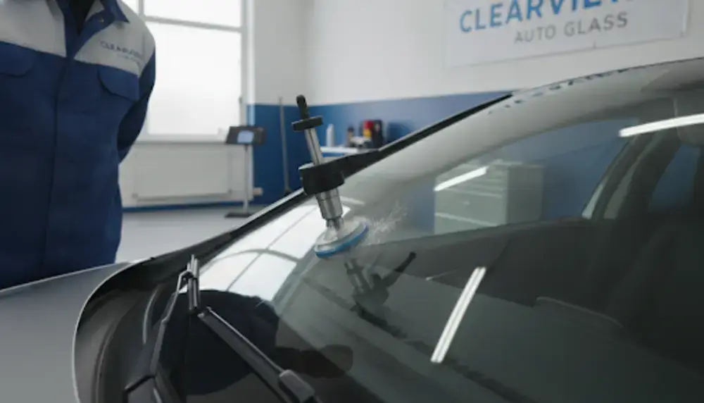
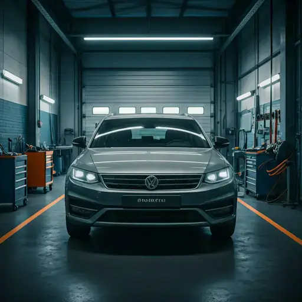
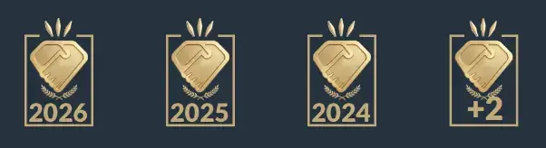

Kőfelverődés, repedés vagy menthetetlen autóüveg? Azonnali segítség telefonon, szakszerű javítás vagy teljes szélvédőcsere Szombathelyen.
Gyors és szinte láthatatlan javítás professzionális gyantával. Megelőzi a továbbrepedést és visszaállítja az autóüveg gyári szilárdságát.
Friss, hosszabb repedések precíz megfúrása és szakszerű tömítése modern vákuumtechnológiával, elkerülve a cserét.
Ha a sérülés már nem javítható, gyári minőségű üvegek szakszerű beépítésével, a legmodernebb ragasztási technológiával végezzük a cserét.
Több éves tapasztalat
Több ezer sikeres autóüveg javítás és szélvédőcsere.
Garancia a munkára
Legtöbb elvégzett javításunkra és cserénkre garanciát vállalunk.
Prémium anyagok
Kizárólag gyári szabványú ragasztókat, gyantát és üvegeket használunk.
Rugalmas bejelentkezés
Telefonon egyeztetett időpontban, a lehető leggyorsabban fogadjuk.

100%
Elégedettségi arány
"Nagyon rendes volt az úr, azonnal tudott szinte fogadni! Gyors - perciz! Köszi"
Zone Fitt
verified Google-ről hitelesítve
"Csodával határos módon egy kőfelverődést eltüntetett. Arról nem beszélve,hogy azonnal fogadott és egyből nekiállt. Ilyen emberektől jobb ez a világ!Köszönöm szépen!! Bátran ajánlom mindenkinek!"
Pinezitsné Irén
verified Google-ről hitelesítve
"Átutazóban voltam és sajnos bekaptam egy teherautóról egy jó nagy kavicsot. Bár elmúlt dél és a mester délig volt de visszajött és megjavította. Nagyon szépen és korrekten. jókor segített utólag is Köszönöm szépen még egyszer!"
Zsolt Kiskopárdi
verified Google-ről hitelesítve
Szervizünk elkötelezett a folyamatos prémium minőség és az ügyfelek maximális elégedettsége mellett. Ezt bizonyítják az egymást követő években elnyert szakmai díjaink is.

A kisebb kőfelverődések szinte mindig javíthatóak, de ha a sérülés túl nagy, a vezető látóterében van, vagy az autóüveg már elrepedt, a biztonság érdekében szakszerű szélvédőcserét kell alkalmazni.
Azonnal ragassza le a sérülést celluxszal, hogy ne menjen bele kosz és nedvesség, majd hívjon minket mielőbb, nehogy a repedés továbbhaladjon és emiatt szélvédőcserére legyen szükség!
location_on Szombathely nagy Tesco parkoló, Varasd u. 2.
schedule Telefonos egyeztetés alapján, hétfőtől szombatig.
Egy apró repedés is veszélyessé válhat, ha hirtelen továbbhasad. Keressen minket telefonon, és mentse meg vagy cseréltesse ki szélvédőjét még ma!